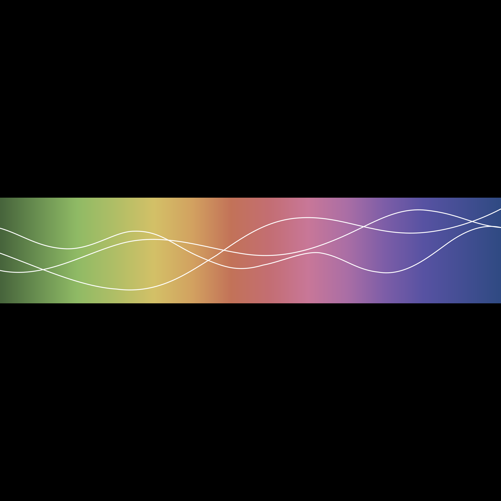

<!doctype html><html lang="zh-CN"><meta charset="utf-8"><meta name="viewport" content="width=device-width,initial-scale=1"><title>Aether · 色带与声波</title><style>:root{color-scheme:dark;background:#000;color:#aaa;font-family:Arial,"PingFang SC",sans-serif}*{box-sizing:border-box}body{margin:0}header{position:fixed;top:0;left:0;right:0;z-index:1;height:56px;padding:0 24px;display:flex;align-items:center;gap:24px;font-size:11px;letter-spacing:1.5px}header span{flex:1}a{color:#aaa;text-decoration:none}a:hover{color:#fff}main{height:100dvh;display:flex;align-items:center;justify-content:center;overflow:hidden}img{display:block;width:100vw;height:auto;aspect-ratio:1;flex-shrink:0}a:focus-visible{outline:1px solid #fff;outline-offset:5px}@media(max-width:520px){header{padding:0 16px;gap:16px;font-size:10px;letter-spacing:1px}}</style><header><span>AETHER / SPECTRUM WAVE</span><a href="spectrum-wave.svg" target="_blank" rel="noopener">SVG</a><a href="spectrum-wave-3072.png" target="_blank" rel="noopener">3072 PX</a></header><main></main></html>